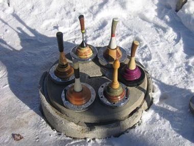

Home / Modern Heritage / Northern and Eastern Europe
Encyclopedia ID 1451
Ice Stock Sport
Also known as Eisstockschießen

Slide a heavy stock down a 28 m lane to land closest to the target ring (Daube), bumping rivals out of the way, in teams of four.
Heritage note
Part of the living heritage of Austria, Germany.
Origins
Usually placed in the era of Modern Heritage (1800 to today), although its exact origins are uncertain, within the cultural world of Northern and Eastern Europe.
Sources
Related entries


Hose-Run Fire Sport
Czechia +1 · Dexterity and skill games
Varpa
Sweden · Dexterity and skill games

Pinata swing
Mexico +1 · Dexterity and skill gamesPlay preview · in the Sports & Skill of the World app
More from Austria

Alpine Yodel
Switzerland +2 · Archery, throwing and target gamesPlay preview · in the Wind & Voice of the World app

Finger Hooking
Germany +1 · Wrestling and martial sports
Federkielstickerei
Austria +1 · Crafts and makingPlay preview · in the Stitch & Thread of the World appFinger pulling
Austria · Street and playground games